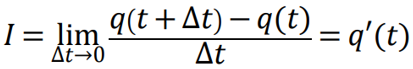

Похідна в прикладних задачах
Діючими навчальними програмами з курсу алгебри і початків аналізу всіх рівнів в темі ”Похідна та її застосування” передбачено навчання учнів розв’язуванню прикладних задач на знаходження найбільших і найменших значень реальних величин.
Окремі питання методики навчання учнів розв’язування прикладних задач на знаходження найбільшого і найменшого значень функції методом диференціального числення розглядають М. Вайнтрауб, Г. Дутка, С. Григулич, А. Парафійник, В. Стасюк, І. Стрельченко, О. Стрельченко та ін. Автори статей зосереджують увагу на задачах з економічним змістом.
Проведено ряд дисертаційних досліджень, серед яких дослідження Г. Дутки, Л. Соколенко, Ю. Ткач та ін., у яких, серед інших питань, розглядаються питання методики навчання учнів розв’язування прикладних задач, призначених для вивчення застосувань похідної.
Похідна в механіці
Механічний рух - це зміна положення тіла в просторі відносно інших тіл з плином часу. Основною характеристикою механічного руху є швидкість.
Розглянемо алгоритм знаходження швидкості тіла за допомогою похідної. Якщо закон руху тіла заданий рівнянням 𝑠 = 𝑠(𝑡), то для знаходження миттєвої швидкості тіла в який-небудь певний момент часу треба:
- Знайти похідну 𝑠′′ = 𝑓′′(𝑡).
- Підставити в отриману формулу задане значення часу.
Задача. Автомобіль наближається до мосту зі швидкістю 72 км/год. Біля мосту стоїть дорожній знак «36 км/год». За 7 сек до в'їзду на міст, водій натиснув на гальмівну педаль. Чи заїде на міст з дозволеною швидкістю автомобіль, якщо гальмівний шлях визначається формулою 𝑠 = 20𝑡 − 𝑡² ?
Розвязання: 𝑣(𝑡) = 𝑠 ′ (𝑡) = 20 − 2𝑡
Далі обчислимо швидкість автомобіля, яка буде через 7 секунд:
𝑣(7) = 20 − 2 ∙ 7 = 20 − 14 = 6 (м/с) 6 м/с = 21,6 км/год.
Відповідь: Так, тому що швидкість через 7 сек. буде дорівнювати 21,6 км/год.
Зовнішній ресурс
Похідна в електротехніці
У наших будинках, на транспорті, на заводах: усюди працює електричний струм. Під електричним струмом розуміють спрямований рух вільних електрично заряджених частинок. Кількісною характеристикою електричного струму є сила струму.
У ланцюзі електричного струму електричний заряд змінюється з плином часу за законом 𝑞 = 𝑞(𝑡). Сила струму І є похідною заряду q по часу:

В електротехніці в основному використовується робота змінного струму. Електричний струм, що змінюється з часом називають змінним. Ланцюг змінного струму може містити різні елементи: нагрівальні прилади, котушки, конденсатори. Отримання змінного електричного струму засноване на законі електромагнітної індукції, формулювання якого містить похідну магнітного потоку.
Задача.Заряд, що протікає через провідник, змінюється за законом
𝑞 = sin ∙ (2𝑡 − 10). Знайти силу струму в момент часу t = 5 cек.
Розв’язання: Знайдемо похідну q.
𝑞 ′ = cos(2𝑡 − 10) ∙ 2 = 2 cos(2𝑡 − 10)
Згідно з умовами задачі, t дорівнює 5 секундам, отже:
𝑞 ′ = 2 cos(2 ∙ 5 − 10) = 2 cos 0 = 2(𝐴)
Відповідь: Сила струму І дорівнює 2 (А).
Зовнішній ресурс
Похідна в хімії
В хімії знайшло широке застосування диференціальне числення для побудови математичних моделей хімічних реакцій і подальшого опису їх властивостей. Хімія - це наука про речовини, про хімічні перетворення речовин. Хімія вивчає закономірності перебігу різних реакцій. Отже, як же саме використовують похідну в хімії? Наприклад, інженерам-технологам при визначенні ефективності хімічних виробництв, хімікам, які розробляють препарати для медицини і сільського господарства, а також лікарям і агрономам, які використовують ці препарати для лікування людей і для внесення їх в грунт. Одні реакції проходять практично миттєво, інші йдуть дуже повільно. Тому в реальному житті для вирішення виробничих завдань у медичній, сільськогосподарській та хімічній промисловості просто необхідно знати швидкості реакцій хімічних речовин. Швидкістю хімічної реакції називається зміна концентрації реагуючих речовин в одиницю часу або похідна від концентрації реагуючих речовин за часом (на мові математики концентрація була б функцією, а час – аргументом). Якщо P (t) - закон зміни кількості речовини, що вступив в хімічну реакцію, то швидкість v (t) хімічної реакції в момент часу t дорівнює похідній: 𝑉 (𝑡) = 𝑝 ′(𝑡)
Задача.Нехай кількість речовини, що вступили в хімічну реакцію, задаються залежністю: р (𝑡) = 𝑡² / 2 + 3𝑡 − 3 (моль). Знайти швидкість хімічної реакції через 3 секунди.
Розв’язання:Знайдемо похідну даної функції: 𝑝 ′(𝑡) = 𝑡 + 3 Підставами значення часу 3 с в похідну: 𝑝 ′(3) = 3 + 3 = 6 (моль / с)
Відповідь:6 моль в секунду. Зовнішній ресурс
Похідна в біології
Популяція - це сукупність особин даного виду, що займають певну ділянку території всередині ареалу виду, що вільно схрещуються між собою і частково або повністю ізольованих від інших популяцій, а також є елементарною одиницею еволюції. Ефективна чисельність популяції – це сукупність особин, які беруть участь у відтворенні потомства (Ne). Щільність популяції – це чисельність популяції на одиницю площі. Формула Ферсхюльца: 𝑁1 = (𝑁𝑒 – Ксмерт) (Кнародж + 𝑁0) Швидкість чисельності популяції: 𝑣(𝑡) = 𝑁′(𝑡)
Похідна в економіці
Економіка - основа життя, а в ній важливе місце займає диференціальне числення – апарат для економічного аналізу. Базова задача економічного аналізу – вивчення зв'язків економічних величин у вигляді функцій.
Похідна вирішує важливі питання. В якому напрямку зміниться дохід держави при збільшенні податків або при введенні миту? Збільшиться чи зменшиться виручка фірми при підвищенні ціни на її продукцію?
Для вирішення цих питань потрібно побудувати функції зв'язку входять змінних, які потім вивчаються методами диференціального обчислення.
Також за допомогою екстремуму функції (похідної) в економіці можна знайти найвищу продуктивність праці, максимальний прибуток, максимальний випуск і мінімальні витрати.
Через похідну можна визначити і продуктивність праці:
Нехай функція 𝑢 = 𝑢 (𝑡) висловлює кількість виробленої продукції u за час t. Необхідно знайти продуктивність праці в момент 𝑡₀.
За період часу від 𝑡₀ до 𝑡 ₀ + 𝛥𝑡 кількість виробленої продукції зміниться від значення 𝑢 ₀ = 𝑢 (𝑡₀) до значення 𝑢 ₀ + 𝛥𝑢 = 𝑢 (𝑡 ₀ + 𝛥𝑡).
Тоді, середня продуктивність праці за цей період часу 𝑍 ср = 𝛥𝑢: 𝛥𝑡.
Очевидно, що продуктивність праці в момент t₀ можна визначити як граничне значення середньої продуктивності за період часу від 𝑡 до 𝑡₀ + 𝛥𝑡 при 𝛥𝑡 → 0,
тобто 𝑧 = 𝑙𝑖𝑚 𝑍 ср = 𝑙𝑖𝑚 𝛥𝑢 / 𝛥𝑡 = 𝑢 "(𝑡) при 𝛥𝑡 → 0
Зовнішній ресурс
Спробуйте застосувати отриманні знання в розв’язанні завдань контрольної роботи.